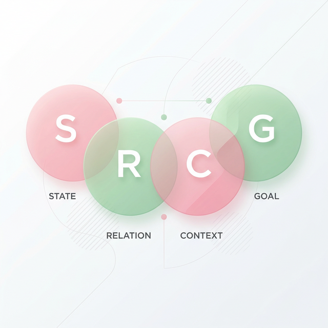
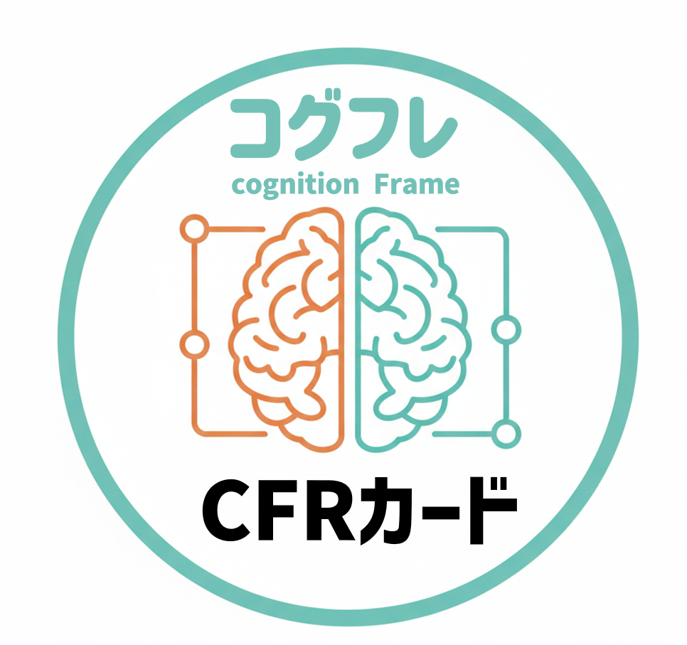
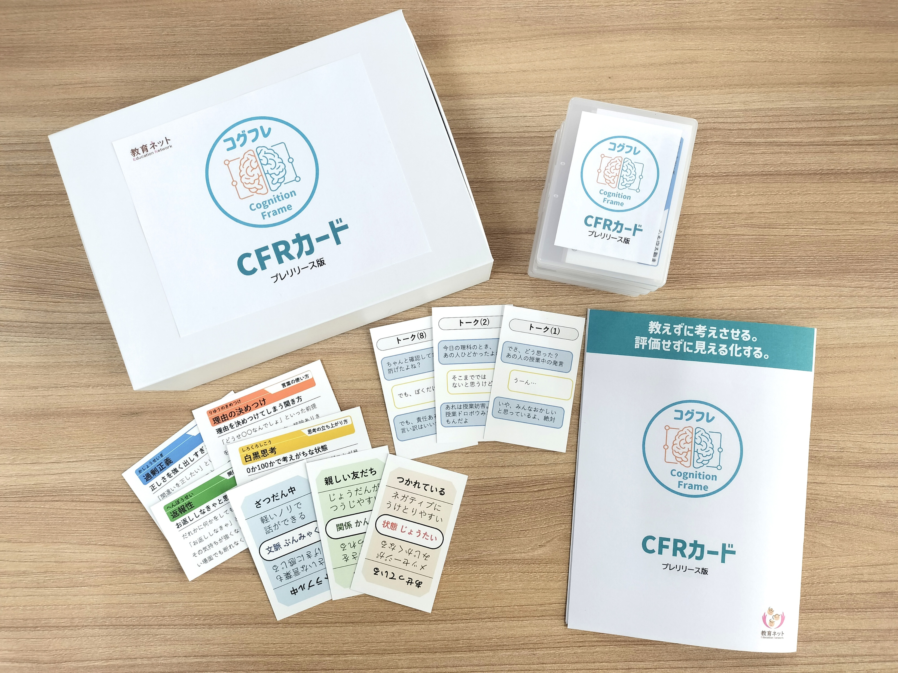

性格を責め合っても解決しない。必要なのは「分析の視点」です。
顔の見えない環境でのやり取り。意図せず相手を傷つけ、修復が難しいトラブルが急増しています。
「あいつは性格が悪い」と人格を否定し合い、行為の本質的な解決が置き去りになっています。
「仲良く」と言うだけでは響かない。子どもたちが納得できる論理的なアプローチが必要です。
認知（捉え方）が決まるプロセスを可視化し、見えない心の動きを分析可能な対象に変えていきます。
状態：その時の自分
疲労、寝不足、焦り、欲求。自分のコンディションが、世界の捉え方を変えています。
関係性：相手との距離
相手が親友か、苦手な子か。相手との心の距離が、言葉の意味を決定づけます。
文脈：場と流れ
SNS、深夜、教室。場所や手段という文脈が、コミュニケーションの形を変えます。
目的：本当のねらい
仲良くしたい、論破したい。その瞬間の真の意図が、一言の重みを左右します。
性格を責めるのではなく、フレームを読み解く。
「条件（フレーム）が揃えば起きてしまう現象」として分析することで、
子どもたちは人格否定という袋小路から抜け出し、
「次はどのフレームを変えれば、事故を防げるか」を自律的に考え始めます。

抽象的なフレームを具体的に選べる「カード」としてパッケージ化。自分のフレームをカードで選ぶことで、内面を「外に出して」冷静に話し合える効果を生みます。

※コグフレ教材セット一式（実物）
教育現場への導入ガイドや活用チラシを公開しています。